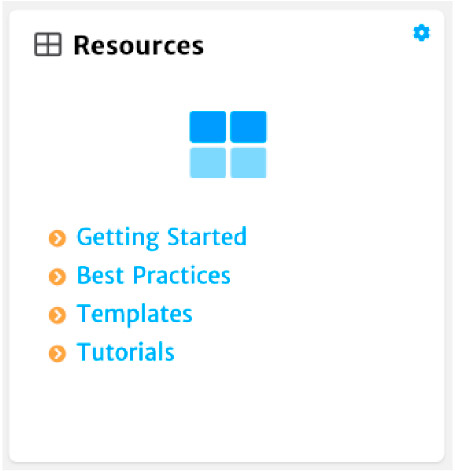
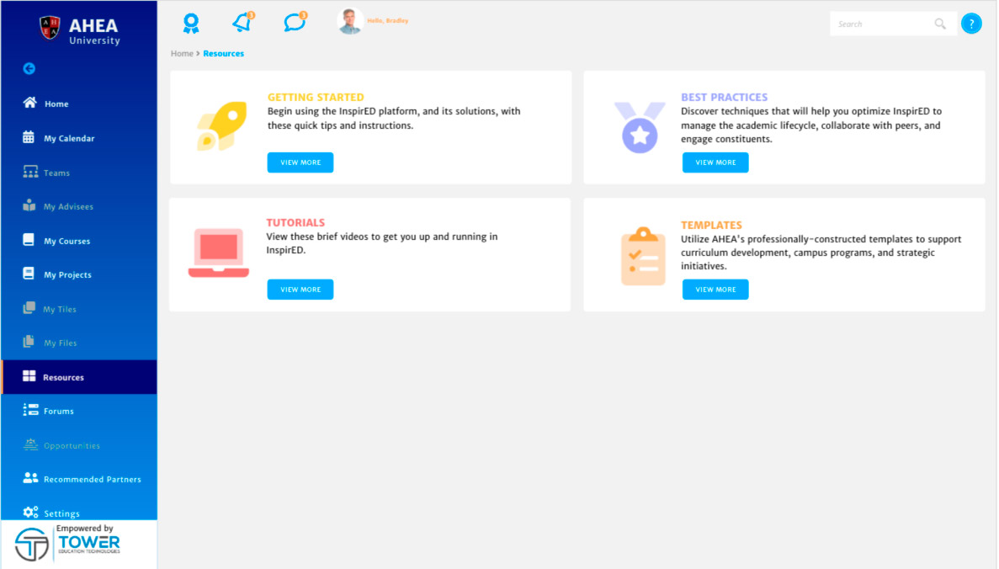
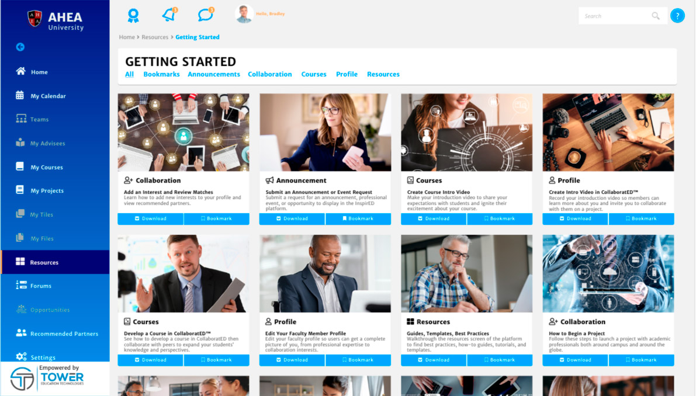
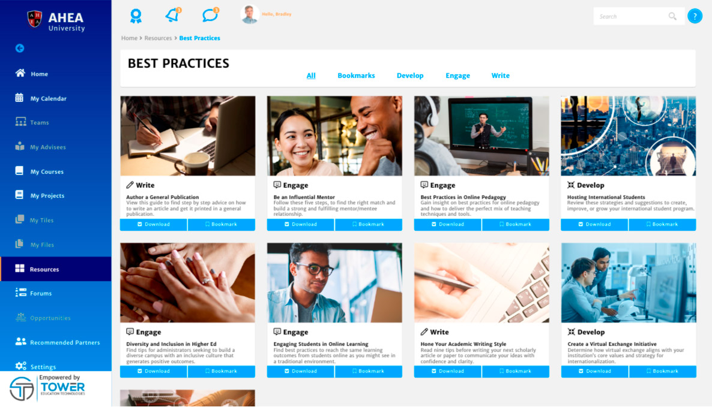
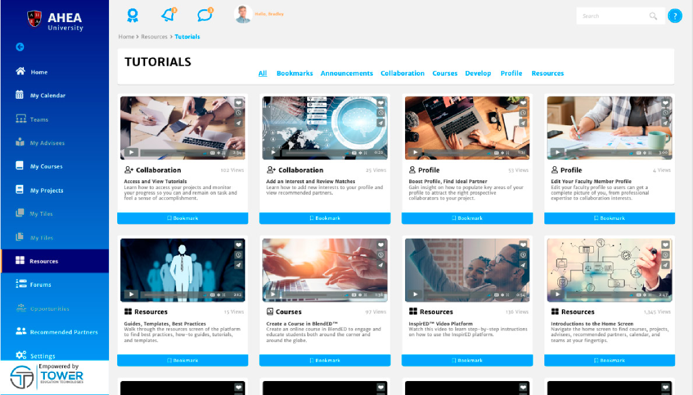
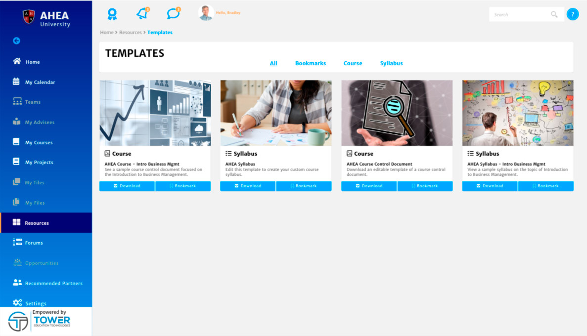

InspirED™ comes with helpful instructional guides and tutorials and can be easily accessed two ways. The Resources Tile is located under My Projects Tile on the Home Screen and provides links to supporting documentation for Getting Started, Best Practices, Templates, and Tutorials. Click the link that meets your needs from the bulleted list or click Resources to open the Resources Screen.

The "Resources Screen" provides links to additional screens full of helpful guides, tutorials, and easy to follow templates to enhance your InspirED™ experience. When you enter the Resources Screen, four tiles display with descriptions and buttons to get more detailed information. To access a specific collection of resources, click View More in the appropriate tile.

Getting Started has beginner guides to introduce you to InspirED™ . When you enter the Getting Started Screen, you find tiles corresponding to tips and instructions to help you get started with InspirED™ . You can also bookmark specific resources for easy access in the future.

Best Practices provides guides to aide in creating greatness from writing publications to developing and starting a research project. When you enter the Best Practices Screen, you will discover techniques to optimize InspirED™.

Tutorials include videos to help you get you up and running in InspirED™. From the basics and introductions to more advanced features, the tutorial videos will help optimize your experience.

Templates gives you access to AHEA's professional constructed documentation. Utilizing these resources will make creating and setting up courses easy. Tiles will be added as more categories and content becomes available.
